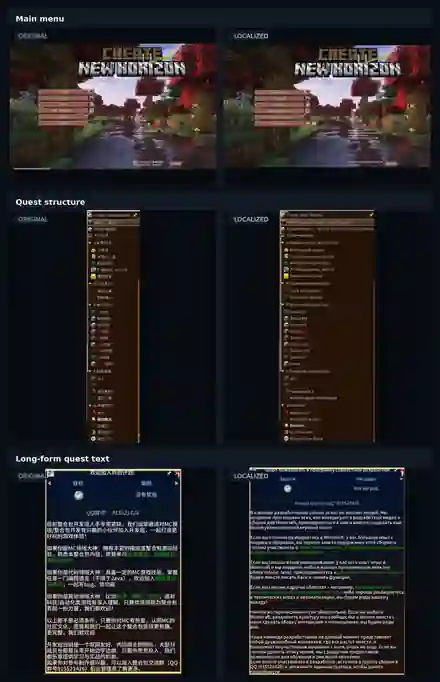

Chinese → Russian
Create: New Horizon
Originally a Chinese modpack with a large volume of quests, mods and custom content. The localization had to keep terminology consistent across the whole project and work correctly in-game.
QuestsModsGUITerminologyIn-game QA

Published by KennnyMc
75K+ views on captured post
75K+ views on captured post

Menu, quest structure and long-form quest text.